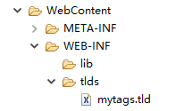
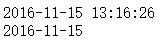
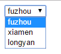
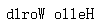

当JSTL自带标签无法满足我们的开发需求的时候，我们可以自定义标签。定制标签可以通过实现SimpleTag接口或者继承SimpleTagSupport类（SimpleTagSupport提供了SimpleTag接口默认实现）。
标签的具体实现功能逻辑写在doTag()方法中，定制JSP标签的大致步骤分为两步：
1.编写标签处理器
2.注册标签
SimpleTag
标签处理器
编写一个Java类，实现SimpleTag接口：
|
|
doTag方法中编写了定制标签要实现的功能。getParent，setParent方法只有标签嵌套在另一个标签的时候才被调用。setJspContext方法传递了一个JspContext对象，JspContext对象的getOut方法返回一个JspWriter。
注册标签
在WEB-INF文件夹下新建一个tlds文件夹，然后在该文件夹下新建一个mytags.tld文件：

|
|
最主要的为tag标签，name标签名，tag-class为标签java类路径。
在jsp页面中使用该标签：
|
|
启动tomcat访问该jsp，页面显示This is my first tag. 控制台输出doTag。
SimpleTagSupport
另一种方法为继承SimpleTagSupport类，重写doTag方法，这里模拟一个时间格式化标签：
|
|
fmt为标签的属性，这里为时间格式化的格式。通过静态方法getJspContext可以获取JspContext对象。
编写好便签处理器后，注册它：
|
|
attribute标签定义了标签的属性。
在jsp页面中进行测试：
|
|
两种方式给fmt属性赋值，启动tomcat访问该jsp页面，页面显示：

JspFragment
JspFragment就是一段不包含scriplet的jsp代码段，JspFragment类有两个方法：getJspContext和invoke。
getJspContext方法返回与这个JspFragment相关的JspContext，invoke方法用来执行片段，如果片段不含标签无需执行的话，则传递null。
现定制一个select标签，任务是根据传入的以逗号分隔的字符串转为对应的下拉选框。select标签里的JspFragment内容为：
|
|
编写标签处理器：
|
|
注册该标签：
|
|
因为标签包含JspFragment，所以body-content标签配置为scriptless。
在jsp页面中测试该标签：
|
|
启动tomcat，访问该jsp页面，页面显示：

查看源码：
|
|
函数
假如JSTL中的函数标签不能满足我们的实际需求，我们也可以自己编写。
新建Function包，在包下创建StringFunction类：
|
|
注册该标签：
在WEB-INF下的tlds下新建function.tld：
|
|
name表示函数名。
function-class为实现该函数的Java类的全类名。
function-signature表示该函数的静态Java方法签名。
在jsp中测试该EL函数：
|
|
启动tomcat，访问该jsp，页面显示：
